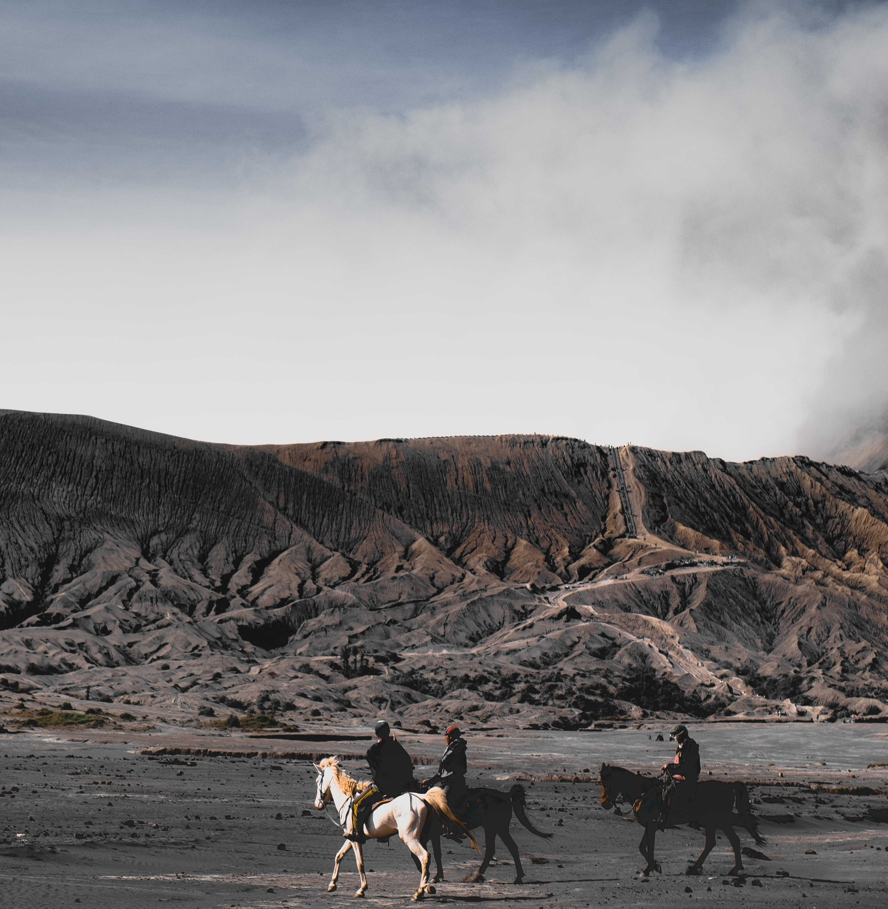

Gunung Bromo
Gunung Bromo atau dalam bahasa Tengger dieja "Brama", juga disebut Kaldera Tengger, adalah sebuah gunung berapi aktif di Jawa Timur, Indonesia. Gunung ini memiliki ketinggian 2.329 meter di atas permukaan laut dan berada dalam empat wilayah kabupaten, yakni Kabupaten Probolinggo, Kabupaten Pasuruan, Kabupaten Lumajang, dan Kabupaten Malang. Gunung Bromo terkenal sebagai objek wisata utama di Jawa Timur. Sebagai sebuah objek wisata, Bromo menjadi menarik karena statusnya sebagai gunung berapi yang masih aktif. Gunung Bromo termasuk dalam kawasan Taman Nasional Bromo Tengger Semeru. Ada beberapa destinasi wisata di Bromo yang menjadi tujuan utama wisatawan ke Bromo. Tidak hanya sunrise Bromo saja yang terkenal, melainkan ada beberapa destinasi yang disukai wisatawan yaitu; Penanjakan 1, Bukit Kingkong, Bukit Cinta Bromo, Seruni Point, Lembah Widodaren, Kawah Bromo, Gunung Batok, Pura Luhur Poten, Pasir Berbisik dan Jembatan Gantung Kaca Bromo
|

|